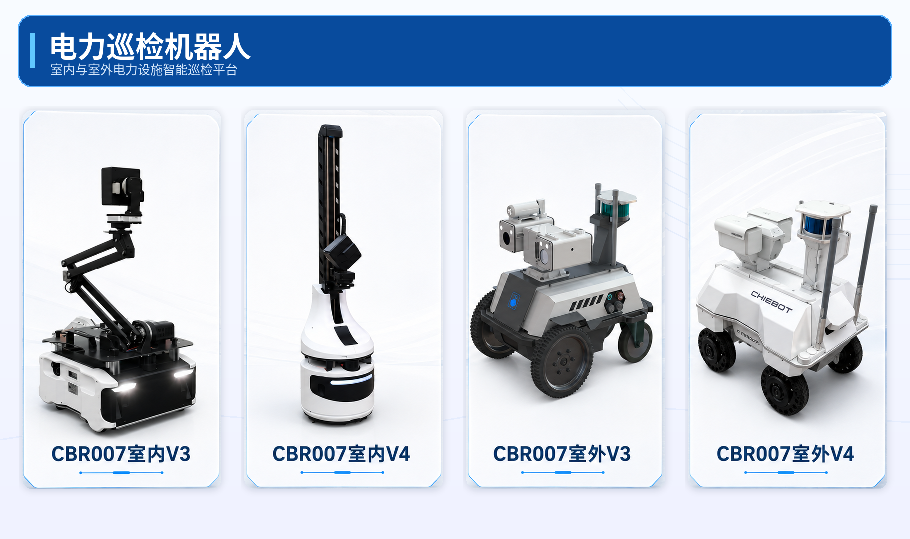
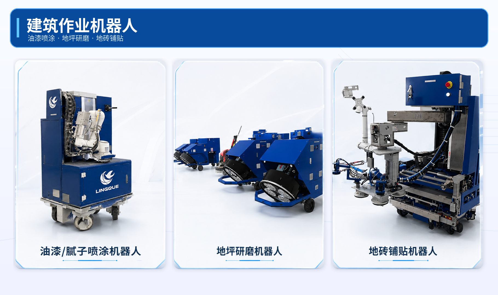
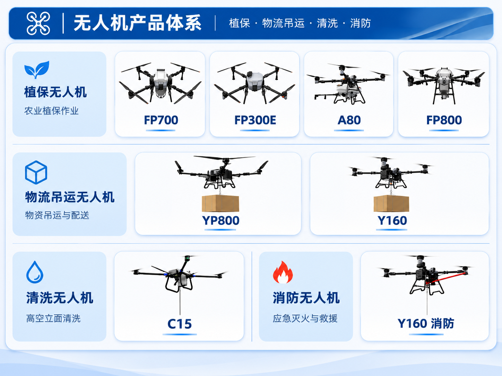

Robots
A selection of robotic platforms I have developed, from ground robots to aerial systems.
Select an image to view it at full resolution.
Chiebot Power Inspection Robots
Indoor and outdoor robotic platforms for intelligent inspection of power facilities.

Lingque Construction Robots
Robotic platforms for paint and putty spraying, floor grinding, and tile laying.

TopXGun Aerial Robots
UAV platforms for crop protection, cargo lifting, facade cleaning, and firefighting.
